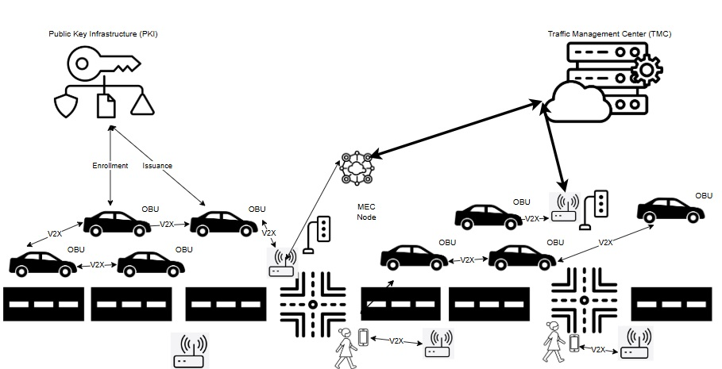
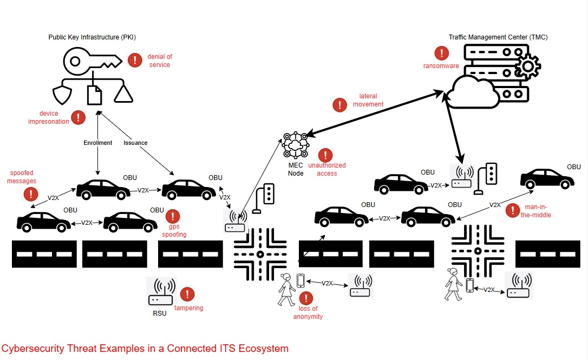
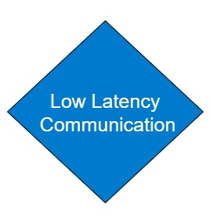
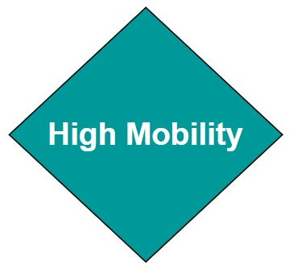
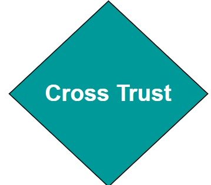
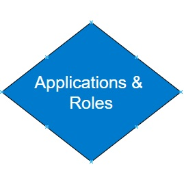
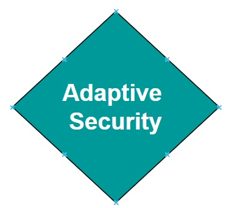
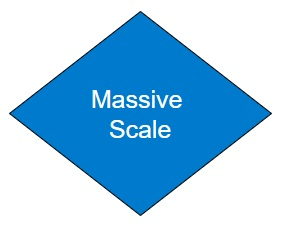
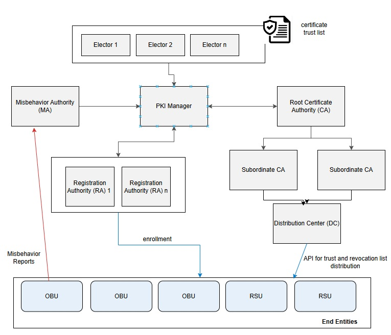

A Beginner's Guide to Intelligent Transportation System (ITS) Cybersecurity¶
An Introduction to ITS and ITS Cybersecurity¶
Introduction to ITS Systems of Systems¶
Intelligent Transportation Systems (ITS) enhance mobility and safety through connected and automated technologies. ITS relies on real-time data exchange between vehicles, infrastructure, and cloud-based services to optimize traffic flow and improve vehicular safety. Connected vehicles use vehicle-to-everything (V2X) communication to help prevent collisions, while roadside units (RSUs) relay critical information such as signal phase changes, work zone alerts, and dynamic speed limits. Mobile edge computing (MEC) enables rapid decision-making by processing data close to the roadway, reducing latency for safety-critical applications. The following diagram illustrates the key components of a typical ITS deployment and how they interact as a system of systems.

ITS is not a single system, but a system of systems, including vehicles, sensors, infrastructure, communications networks, and backend platforms—that must cooperate in real time. The complexity and interconnectedness of these systems create new operational benefits but also introduce new types of risk. Because vehicles and infrastructure often interact dynamically and at high speeds, reliability, precision, and trust in communications are essential.
Introduction to Cybersecurity¶
Cybersecurity is the protection of digital systems, communications, and data from unauthorized access, manipulation, or disruption. In critical infrastructure sectors such as transportation, cybersecurity safeguards systems that directly affect physical safety. A cybersecurity failure could disrupt traffic signals, disable roadside infrastructure, or compromise the behavior of a connected vehicle on the road.
Cybersecurity principles include confidentiality, integrity, and availability. Confidentiality ensures that data is protected from unauthorized access, preserving privacy and preventing misuse. Integrity guarantees that data and messages remain accurate and unaltered during transmission or storage. Availability ensures that systems and services remain operational and accessible when needed. In transportation, these principles apply to traffic control commands, vehicle messaging, digital road signage, and other systems. In such cases, timing, accuracy, and authentication of source or destination entities are critical
ITS Cybersecurity¶
ITS cybersecurity ensures the integrity, confidentiality, and availability of data exchanged across an ITS system of systems. It protects against cyber threats that could disrupt traffic management, compromise vehicle behavior, or manipulate digital traffic controls. This includes securing communication between vehicles and infrastructure, ensuring that only trusted devices participate in ITS applications, and protecting sensitive data from misuse or exposure.
Modern ITS environments face a broad and evolving threat landscape. Communications between vehicles and infrastructure—known as Vehicle-to-Everything (V2X)—must be protected from interception, manipulation, and unauthorized injection of false data. Network infrastructure is vulnerable to denial-of-service (DoS) and malware-based attacks, which can disable roadside systems or overwhelm traffic management centers. IoT devices such as smart traffic signals, cameras, and sensors may be physically or remotely exploited due to weak default configurations or unpatched software. Location-based services can be compromised through GPS spoofing and jamming, causing vehicles to misreport their positions or lose navigation capability. As cyber-physical systems, ITS deployments must defend not just against digital exploits, but against threats that have direct safety consequences in the physical world—from manipulating emergency vehicle priority to triggering unsafe driving conditions. The following diagram provides a simplified view of the types of threats that can affect different components of the ITS environment.

Unlike traditional internet-based systems, ITS cybersecurity must function in highly mobile, latency-sensitive environments where anonymity of participants is often important. Vehicles must trust messages from other vehicles or roadside systems they have never encountered before—often with no direct internet connection or central authority available at the time of interaction. As a result, ITS requires specialized cybersecurity tools and protocols that go beyond traditional cybersecurity tools such as Transport Layer Security (TLS) and X.509 certificates. The sections that follow introduce the unique characteristics of ITS cybersecurity, explain why general-purpose cybersecurity tools are insufficient, and describe the standards and trust frameworks that support secure ITS deployments.
Why ITS Cybersecurity is Unique¶
Transportation systems integrate real-time cyber-physical operations with direct safety implications. Unlike traditional IT systems, which can often tolerate latency, centralized trust models, and identity-bound certificates, ITS requires decentralized, privacy-preserving, and low latency security models that operate across jurisdictions. These systems support millions of highly mobile vehicles and infrastructure components that must be able to securely interact often without continuous connectivity.
While ITS-specific security mechanism such as those defined in IEEE 1609.2 or ETSI TS 103 09 were developed to meet these needs, it is important to understand why traditional internet security protocols like X.509 and TLS are often not appropriate. The characteristics below highlight the specific challenges that make ITS cybersecurity a distinct field of practice.
1. Real-Time, Safety-Critical Operations¶
|  |
Real-Time, Safety-Critical Operations ITS involve real-time interactions that directly affect safety. For example, vehicle-to-Road Side Unit (RSU) communication requires minimal latency so that vehicles can immediately process messages. Any delays that would be introduced through traditional internet security protocols, which are often optimized for less time-sensitive applications, could lead to safety hazards. ITS-specific mechanisms, such as IEEE Std. 1609.2 certificates, are designed to prioritize low-latency communication while maintaining security, making them better suited for safety-critical real-time operations. |
2. Mobility Requirements¶
|  |
Mobility Requirements Unlike stationary internet systems, transportation systems operate in highly dynamic environments where devices (e.g., vehicles, pedestrians, RSUs) continuously join and leave networks. IEEE Std. 1609.2 certificates are optimized for use in these dynamic environments, with support for example for short duration lifetimes. Traditional X.509 systems are less equipped to handle frequent certificate updates and revocations required for mobile, decentralized networks. |
3. Anonymity Requirements¶
|
Anonymity Requirements Cybersecurity systems such as the Security Credential Management System (SCMS) issue pseudonym certificates to vehicle OBUs, enabling trusted communication while preserving subscriber anonymity. X.509 certificates have no mechanism for preserving subscriber anonymity. |
4. Multi-Entity Trust Management¶
|  |
Multi-Entity Trust Management ITS environments involve a wide range of stakeholders, including vehicles from multiple Original Equipment Manufacturers (OEMs), infrastructure owned by various jurisdictions, and multiple communication providers. Establishing trust across these entities requires specialized structures, such as the Certificate Trust List (CTL) in North America or the European Certificate Trust List (ECTL). These mechanisms enable the extension of trust to differing policy domains and support the dynamic operation of vehicles with infrastructures owned and managed by differing entities. Generic systems like X.509 lack these built-in cross-trust mechanisms and require substantial planning and processes for trust extension, making them less suited for managing complex ITS trust requirements. |
5. Finer-Grained Authorization Control¶
|  |
Fine-Grained Authorization Control ITS applications often require more granular access control than X.509 structures can provide. For example, IEEE Std. 1609.2 enables the use of Provider Service Identifiers (PSID)/Service Specific Profiles (SSP) which define a subscribers privileges for specific ITS applications and roles. Assertion of specific PSID/SSP values in an IEEE 1609.2 certificate ensures that only authorized subscribers are able to perform specific actions, such as requesting traffic signal priority or accessing sensitive data. Well-defined PSID/SSP profiles allow an ITS to enforce fine-grained authorization and access control. |
6. A Unique Threat Model¶
|  |
Unique Threats ITS faces real-world cyber threats that impact traffic operations and safety. Researchers have shown that they can spoof GPS signals, causing vehicles to misinterpret their location, or hijack roadside units (RSUs) to broadcast false messages, creating congestion or dangerous driving conditions. In past incidents, ransomware attacks on transportation agencies have shut down traffic management centers, preventing operators from monitoring road conditions. Additionally, researchers have demonstrated remote exploits on vehicle-to-everything (V2X) communication, allowing attackers to inject false vehicle attributes into Basic Safety Messages (BSM). These threats require ITS-specific security measures, such as misbehavior detection and certificate-based authentication and privileging, that are not provided via X.509 certificates. |
7. Scalability and Certificate Management¶
|  |
Massive Scale The scale of ITS networks includes millions of vehicles, RSUs, and other devices that require efficient certificate issuance, rotation, and revocation processes. SCMS is designed for this scale, enabling seamless management of certificates. X.509-based Public Key Infrastructures (PKI) do not inherently address the scalability and frequency of certificate changes required in ITS. |
ITS Cybersecurity Building Blocks¶
Now that we've established what makes ITS cybersecurity unique, it's useful to introduce the key mechanisms that have been developed to meet those needs. These mechanisms include secure certificate formats tailored for mobile use, frameworks for distributing and managing credentials across millions of devices, and systems for detecting and responding to misbehavior in the network. While specific implementations vary by region—for example, between North America’s SCMS and Europe’s CCMS—the core building blocks share common goals and are aligned with international standards.
The following section provides a high-level overview of these mechanisms, written for non-experts. More technical readers are encouraged to explore the ITS Cybersecurity Mechanisms and Building Blocks section for deeper background.
Credential Management Systems¶
A Credential Management System (SCMS or CCMS) is a specialized type of public key infrastructure (PKI) designed for ITS. It provides the foundation of trust for communications between vehicles, infrastructure, and backend systems. Unlike traditional PKI systems that issue long-term identity certificates, SCMS and CCMS issue short-lived pseudonym certificates that protect user privacy while still enabling strong authentication and authorization. The diagram below introduces the core components of a credential management system used to enable trusted communication in ITS.

These systems include processes for certificate issuance, renewal, revocation, and trust distribution. They also support cross-jurisdictional trust, using structures like Certificate Trust Lists (CTLs) or European Certificate Trust Lists (ECTLs) to allow vehicles and devices from different organizations or countries to interoperate securely.
ITS Certificate Standards¶
ITS uses certificate formats specifically tailored for the real-time, decentralized, and mobile nature of V2X communications. Two major standards are used globally: IEEE 1609.2, which is primarily deployed in North America, and ETSI TS 103 097, which is used in Europe. While developed in parallel, both standards share key features that address the specific challenges of ITS. They support privacy-preserving pseudonymity, allowing vehicles to authenticate messages without revealing long-term identities. They also include geolocation constraints and flexible permission structures that enable fine-grained control over what actions a device is authorized to perform.
Entitlements¶
ITS certificates can carry embedded entitlements—policy assertions that define what a device is authorized to do in the context of specific ITS applications. These entitlements are expressed using certificate fields such as the Provider Service Identifier (PSID) and Service-Specific Permissions (SSP) in IEEE deployments, or the ITS Application Identifier (ITS-AID) and corresponding permissions in ETSI-based systems. For example, a certificate may include an entitlement that authorizes a vehicle to request signal priority, while restricting that capability from others. By supporting fine-grained entitlements, ITS certificates enable strong access control mechanisms that align with specific use cases, user roles, or organizational policies.
Misbehavior Detection¶
Even in a well-secured system, trusted devices can malfunction or behave maliciously. In ITS, where safety depends on the accuracy and integrity of real-time data, it is important to continuously evaluate whether participants are acting in accordance with expected behaviors. Misbehavior detection systems are designed to identify faulty or deceptive behavior, for example inconsistent vehicle position updates, spoofed GPS signals, or invalid safety alerts, and initiate a response that preserves trust in the network. These systems operate at both the edge and the backend. Local detection capabilities onboard vehicles or infrastructure can flag suspicious messages, while backend authorities analyze reported incidents, corroborate evidence, and determine whether a device's credentials should be suspended or revoked. The figure below illustrates a simplified view of how misbehavior is detected, validated, and responded to in a credential-based ITS environment.

Internet vs. ITS Cybersecurity¶
Digital security architectures are typically built as layered stacks, with each layer addressing different types of threats and trust requirements. The traditional internet stack, built around protocols such as TLS and certificate formats like X.509, is well-suited for securing static web services, enterprise systems, and client-server communications. ITS, however, operates under fundamentally different constraints. It involves mobile actors, ephemeral trust relationships, and real-time decision-making in safety-critical contexts. These differences have led to the development of an ITS-specific cybersecurity stack—designed for decentralized communication, scalability, privacy, and performance in dynamic environments. The following comparison outlines where each stack is typically applied, and highlights why the ITS cybersecurity stack is better suited for securing V2X and transportation-specific use cases.
Many of the critical differences between traditional internet security and ITS cybersecurity come down to one key architectural choice: the certificate format. Digital certificates define how trust is established, how messages are authenticated, how privacy is preserved, and how permissions are assigned. Traditional internet systems rely on X.509 certificates, which are long-lived, identity-bound, and designed for centralized, session-based environments—such as browsers, enterprise servers, and backend applications. In contrast, ITS systems use specialized certificate formats, such as IEEE 1609.2 (North America) and ETSI TS 103 097 (Europe), which are tailored for real-time communication between mobile devices in safety-critical scenarios.
The table below is intended as a decision tool. It identifies common deployment considerations and helps clarify which certificate format is better suited to address each one. Readers should evaluate each row in the context of their deployment environment and use case.
| Deployment Consideration | X.509 Certificates | ITS Certificates (IEEE 1609.2/TS 103 097) |
|---|---|---|
| Is the environment latency-sensitive or safety-critical? For example, does the system require real-time processing of messages. | ✘ | ✔ |
| Are devices mobile and frequently entering/leaving networks? | ✘ | ✔ |
| Is user anonymity or pseudonymity required? For example, doesthe deployment need to preserve privacy while still verifying message authenticity? | ✘ | ✔ |
| Is fine-grained access control required? For example, do you need to define what specific actions a device can take within a given application (e.g., request signal priority)? | ✘ | ✔ |
| Are devices expected to send messages without a connection to a server? | ✘ | ✔ |
| Is the environment bandwidth-constrained or using wireless links? | ✘ | ✔ |
| Is the deployment centralized and session-based? | ✔ | ✘ |
| Will the deployment integrate with traditional IT infrastructure (e.g., TMC servers, cloud APIs)? | ✔ | ✘ |
X.509 certificates are still a valid and widely used option for securing communications in backend systems, including data exchanges between traffic management centers, cloud platforms, and enterprise services. However, for on-road communication, safety-critical applications, and mobility-centric environments, X.509 lacks the necessary support for short-lived credentials, anonymity, decentralized trust, and application-specific permissions.